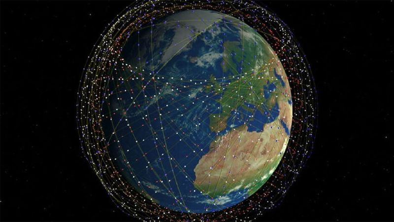

Uno de los grandes proyectos de Elon Musk con SpaceX es la constelación satelital de Starlink. Un sistema que contará con miles pequeños satélites girando alrededor de la Tierra en órbitas bajas -unos 400 kilómetros- con el fin de proporcionar conexión a internet hasta en los lugares más recónditos del planeta.
